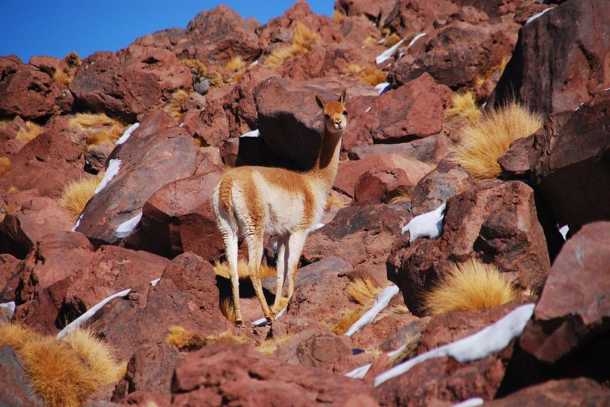
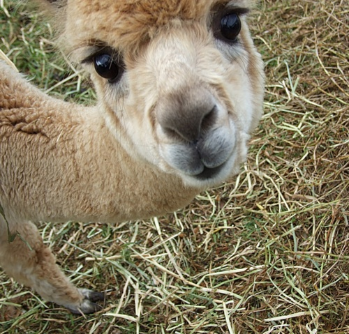
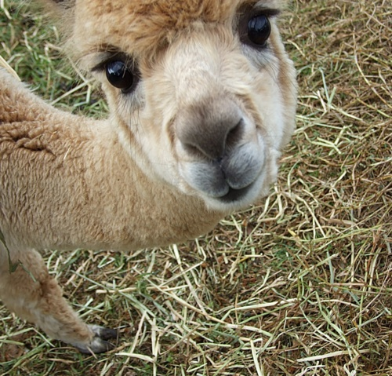

Sección Vicuña
Volver a InicioVICUÑA
(Vicugna vicugna)

Documental aquí.
Descripción
La vicuña (Vicugna vicugna), —del quechua wik'uña— es una especie de mamífero artiodáctilo de la familia de los camélidos y del grupo de los camélidos sudamericanos que vive en el altiplano andino, en el norte de Argentina, el oeste de Bolivia, el noreste de Chile, sectores de los Andes de Ecuador, y en las alturas andinas del Perú, país que posee la principal población de la especie. La alpaca es una especie domesticada que deriva de la vicuña, con aportes genéticos menores de llama.2
Las vicuñas son los camélidos más pequeños, pesan entre 40 y 50 kg y tienen una longitud de 80 cm. Son silvestres. Su color es beige o vicuña (marrón claro rojizo) en el lomo y blanco en la zona ventral y las patas, con variaciones dependiendo de las zonas geográficas donde habitan. Las poblaciones norteñas son más oscuras y tienen un mechón en la parte delantera de pelos largos y blancos (mechón pectoral). Las vicuñas tienen las patas largas y delgadas, terminadas en almohadillas, aptas para caminar sobre varios tipos de suelos, incluso los pedregosos. la fibra de su lana está entre las más finas del mundo, midiendo 15 micrones de diámetro. El pelaje es denso, formado por fibras delgadas que crecen muy juntas, con el objeto de proteger al animal tanto del frío como de la lluvia y el viento. Si las fibras fueran más gruesas y crecieran más distanciadas, dejarían pasar el aire frío y el agua de la lluvia.
Su distribución se limita a la puna, a más de 3200 msnm. Las vicuñas habitan las altiplanicies andinas de clima frío y seco. Son herbívoras y se alimentan de las plantas de las estepas altoandinas y altiplánicas de la Puna.
Adaptación al medio
Son notables las adaptaciones de las vicuñas (del resto de los camélidos también) a las condiciones de la Puna. Esto es consecuencia del proceso de evolución de los animales en su medio y de la coevolución de los camélidos y la estepa. Estas adaptaciones incluyen aspectos que preservan al medio en que viven, como las almohadillas en que terminan sus patas, que no erosionan demasiado el suelo del altiplano. Por su forma de alimentarse se les ha denominado “pastoreadores de bajo impacto”, lo que significa la posibilidad de rápida recuperación de las pasturas. A diferencia de los camellos, las vicuñas son “bebedoras obligadas”, en todos los días, por lo que generalmente viven cerca de los ríos o de lagunas.
Por otro lado, la vicuña forma parte de un ecosistema en equilibrio dinámico en el que unos sirven de alimento a otros. Los sistemas prepuneño, puneño y altoandinos comparten ciertas características de flora y fauna con variaciones de densidad y presencia de especies. Estos sistemas son típicamente estepas y pastizales que poseen pequeños parches más verdes y ricos (vegas o bofedales) en las zonas húmedas y zonas sin vegetación (peladares y salares). Algunas de las especies más características son: la tola, la yareta, el ichu y otros pastos.
Estos sistemas, de baja biomasa de vegetales, sostienen varias especies de herbívoros entre los cuales se encuentran los camélidos silvestres, vicuñas y guanacos. Otras especies silvestres que pastorean en la Puna son los suris Rhea pennata garleppi y tarapacensis, las vizcachas, las chinchillas, los cuyes, los armadillos, etc. También estas estepas son el recurso base para la ganadería de camélidos domésticos (llamas y alpacas), ovinos, caprinos, mulares y vacunos. Dentro de los predadores naturales se encuentran los zorros, los pumas y las jaurías de perros asilvestrados. Las carcasas son el alimento del necrófago más grande de la zona: el cóndor.

 
